Pinot CountryRegions (34)
Appellations, AVAs, valleys and communes — the ground pinot noir answers to.
Australia (3)
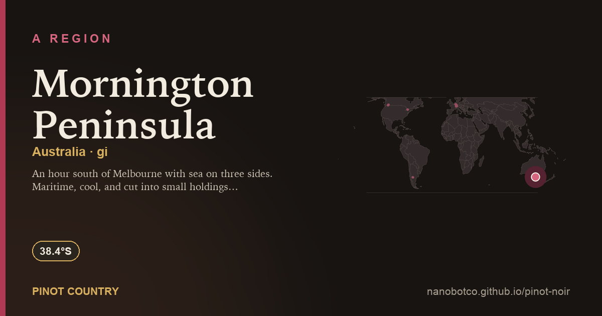
Mornington PeninsulaAn hour south of Melbourne with sea on three sides. Maritime, cool, and cut into small holdings — vineyards here are measured in a few hectares, not a few hundred.
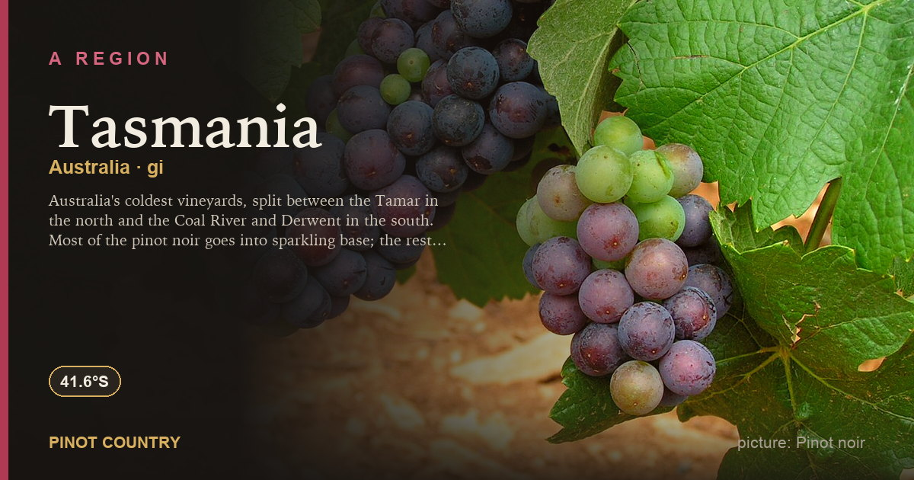
TasmaniaAustralia's coldest vineyards, split between the Tamar in the north and the Coal River and Derwent in the south. Most of the pinot noir goes into sparkling base; the rest is picked ripe enough to bottle red.
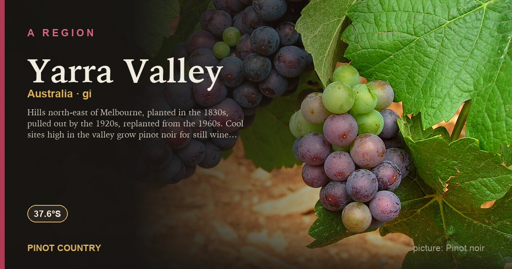
Yarra ValleyHills north-east of Melbourne, planted in the 1830s, pulled out by the 1920s, replanted from the 1960s. Cool sites high in the valley grow pinot noir for still wine and for sparkling.
Canada (1)
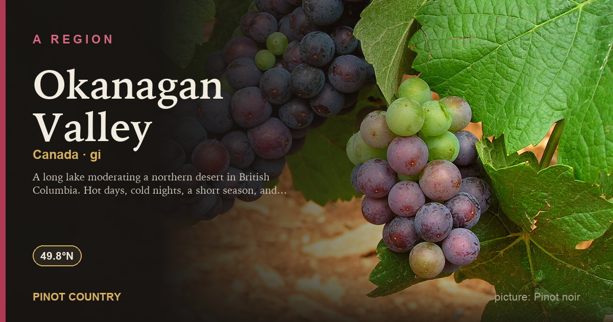
Okanagan ValleyA long lake moderating a northern desert in British Columbia. Hot days, cold nights, a short season, and pinot noir on the cooler northern end.
Chile (1)
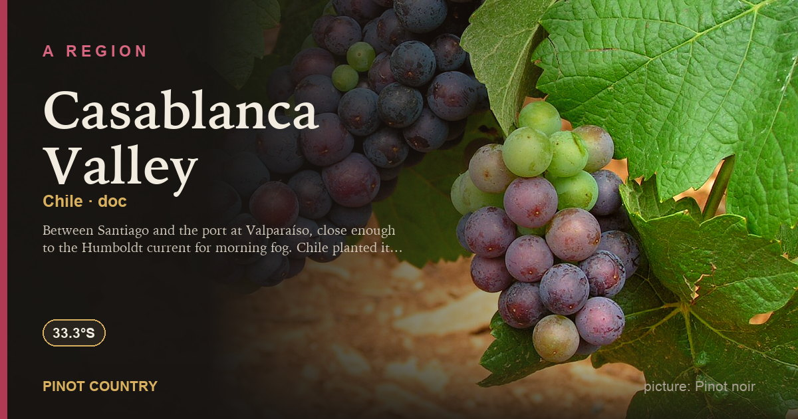
Casablanca ValleyBetween Santiago and the port at Valparaíso, close enough to the Humboldt current for morning fog. Chile planted it in the 1980s to grow something other than cabernet.
France (8)
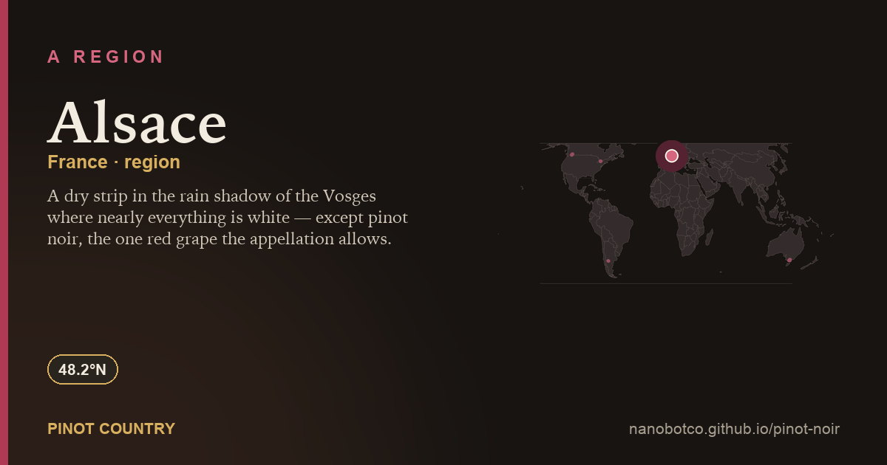
AlsaceA dry strip in the rain shadow of the Vosges where nearly everything is white — except pinot noir, the one red grape the appellation allows.
 Burgundy
BurgundyBourgogne
A strip of limestone running south-west from Dijon where pinot noir and chardonnay have been sorted, fenced and argued over for a thousand years.
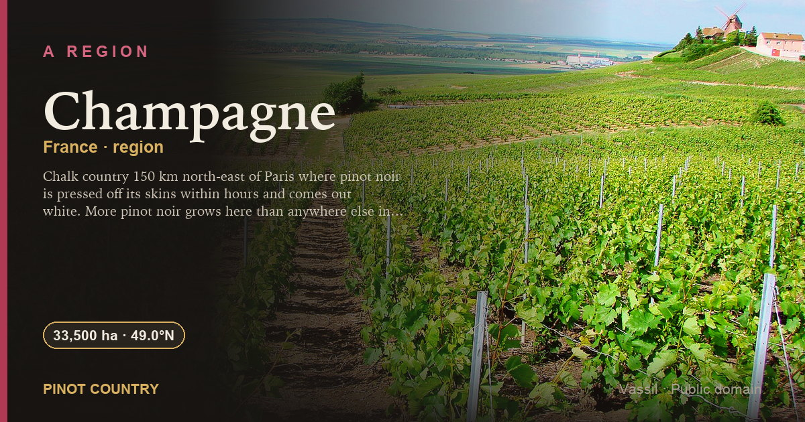
ChampagneChalk country 150 km north-east of Paris where pinot noir is pressed off its skins within hours and comes out white. More pinot noir grows here than anywhere else in France, and almost none of it is red.
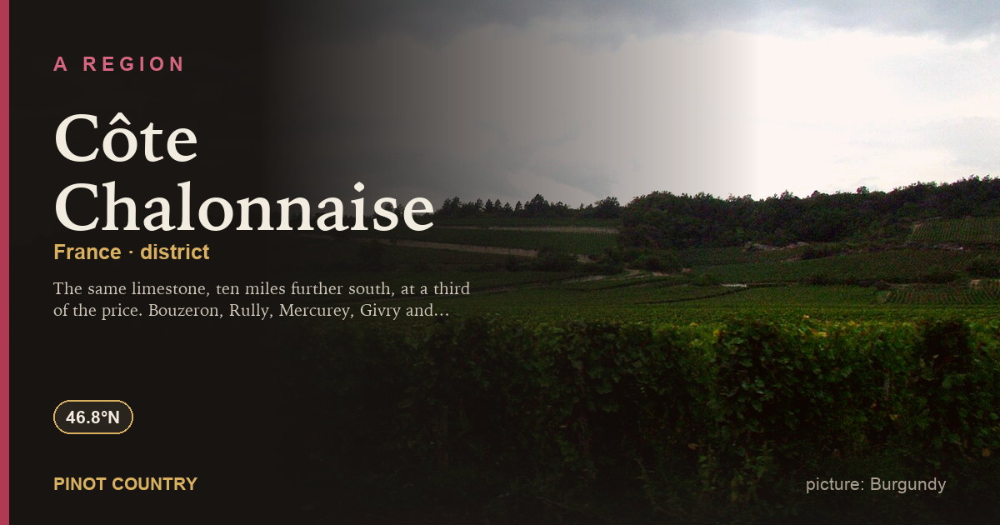
Côte ChalonnaiseThe same limestone, ten miles further south, at a third of the price. Bouzeron, Rully, Mercurey, Givry and Montagny — Mercurey and Givry do the red work.
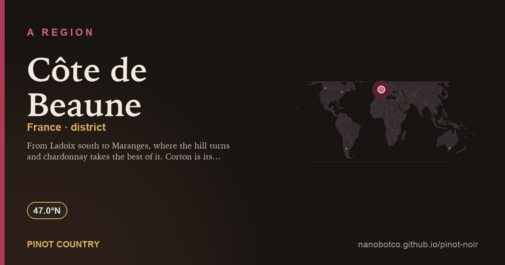
Côte de BeauneFrom Ladoix south to Maranges, where the hill turns and chardonnay takes the best of it. Corton is its only red grand cru; the reds that matter most sit in Pommard, Volnay and Beaune at premier cru.
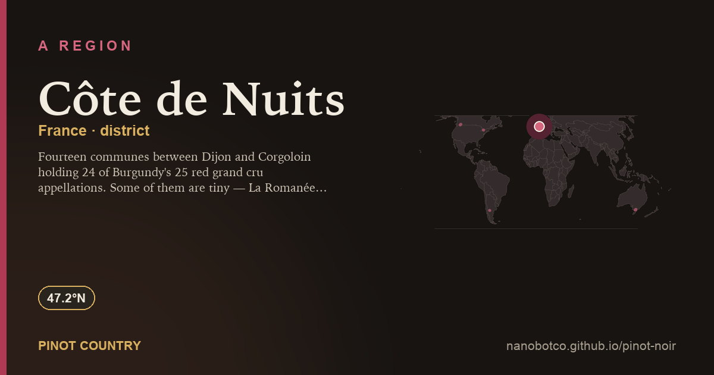
Côte de NuitsFourteen communes between Dijon and Corgoloin holding 24 of Burgundy's 25 red grand cru appellations. Some of them are tiny — La Romanée covers less than a hectare.
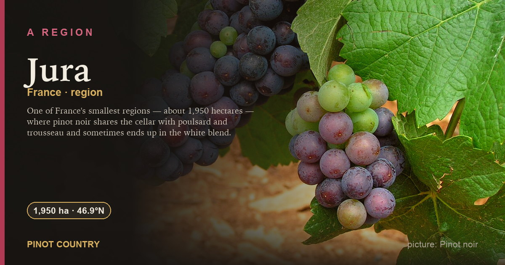
JuraOne of France's smallest regions — about 1,950 hectares — where pinot noir shares the cellar with poulsard and trousseau and sometimes ends up in the white blend.
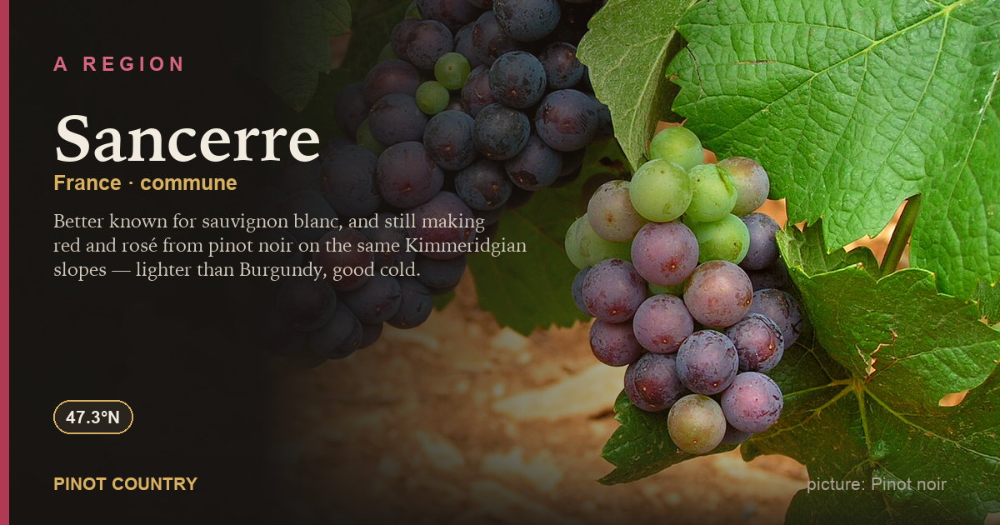
SancerreBetter known for sauvignon blanc, and still making red and rosé from pinot noir on the same Kimmeridgian slopes — lighter than Burgundy, good cold.
Germany (2)
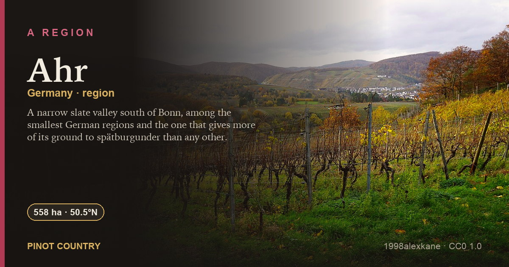
AhrA narrow slate valley south of Bonn, among the smallest German regions and the one that gives more of its ground to spätburgunder than any other.
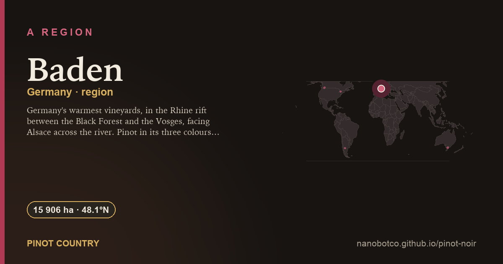
BadenGermany's warmest vineyards, in the Rhine rift between the Black Forest and the Vosges, facing Alsace across the river. Pinot in its three colours covers most of it.
Italy (1)
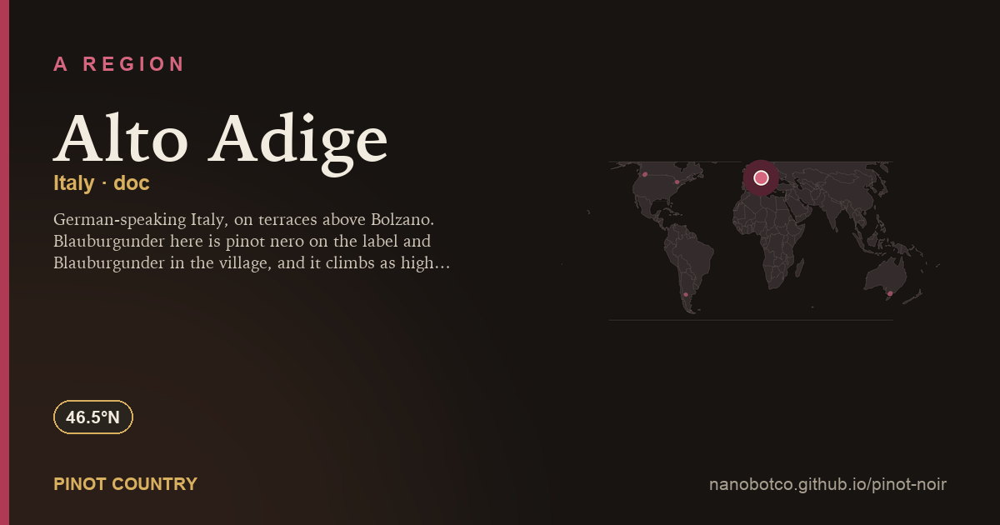
Alto AdigeSüdtirol, South Tyrol
German-speaking Italy, on terraces above Bolzano. Blauburgunder here is pinot nero on the label and Blauburgunder in the village, and it climbs as high as the frost allows.
New Zealand (3)
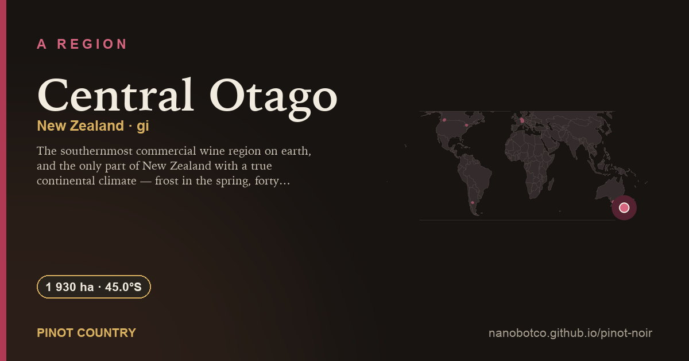
Central OtagoThe southernmost commercial wine region on earth, and the only part of New Zealand with a true continental climate — frost in the spring, forty-degree swings in a day, schist under everything.
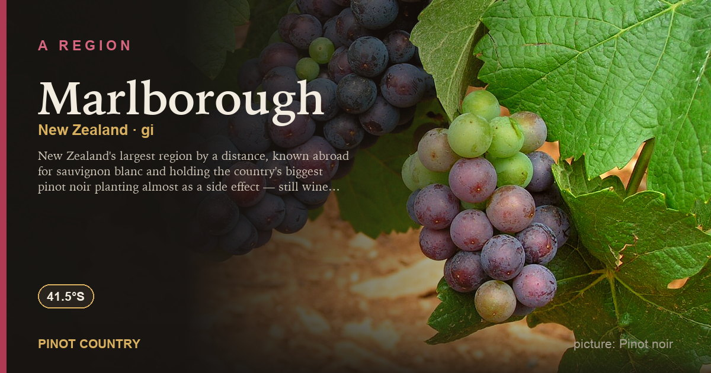
MarlboroughNew Zealand's largest region by a distance, known abroad for sauvignon blanc and holding the country's biggest pinot noir planting almost as a side effect — still wine on the clay of the Southern Valleys, sparkling base…
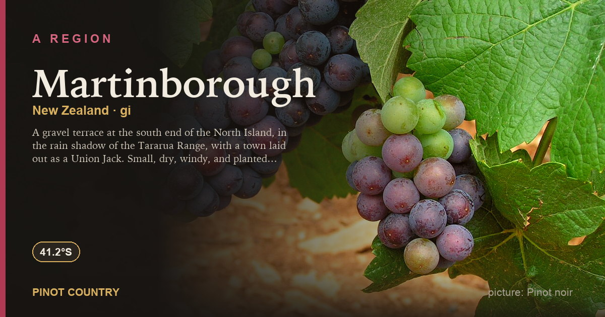
MartinboroughA gravel terrace at the south end of the North Island, in the rain shadow of the Tararua Range, with a town laid out as a Union Jack. Small, dry, windy, and planted almost entirely to pinot noir.
South Africa (1)
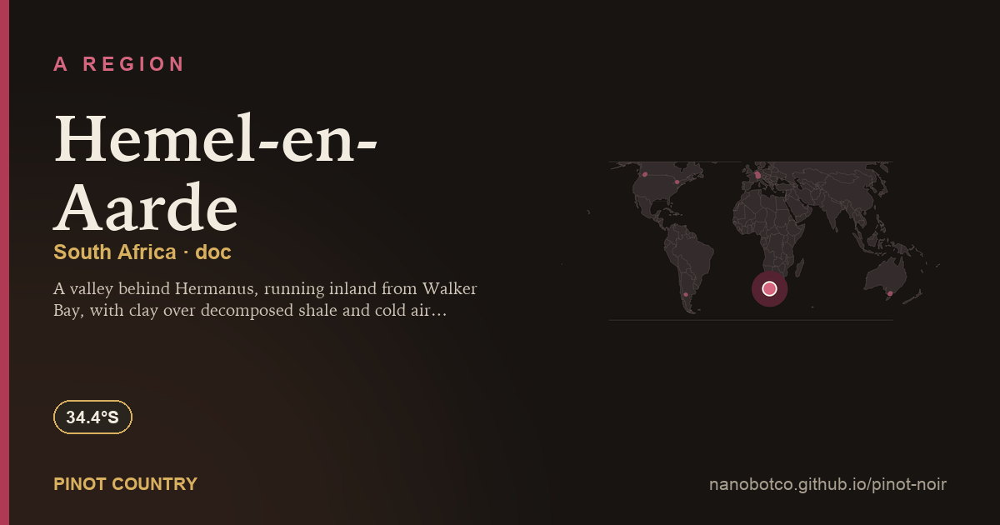
Hemel-en-AardeHemel-en-Aarde Valley, Heaven and Earth
A valley behind Hermanus, running inland from Walker Bay, with clay over decomposed shale and cold air off the Atlantic. South Africa's pinot address.
United States (14)
 Anderson Valley
Anderson ValleyMendocino's fog gap: a narrow valley along the Navarro River, open to the ocean at one end, redwoods at both edges. Sparkling houses came for the acid and stayed for the pinot.
 Dundee Hills
Dundee HillsA single hill of red volcanic Jory soil north-west of Dundee, and the ground Oregon pinot noir started on in 1965.
 Eola-Amity Hills
Eola-Amity HillsBasalt hills west of Salem with a hole in the Coast Range beside them. Afternoon wind off the Pacific comes through the Van Duzer Corridor, shuts the vines down and holds the acid.
 Finger Lakes
Finger LakesDeep glacial lakes in upstate New York holding off the winter. Riesling country, with pinot noir on the better-drained slopes and in the sparkling base.
 Los Carneros
Los CarnerosCarneros
The cold shoulder where Napa and Sonoma both run down to San Pablo Bay. Wind off the bay every afternoon, clay underfoot, and a harvest that starts weeks before the valley floor upstream.
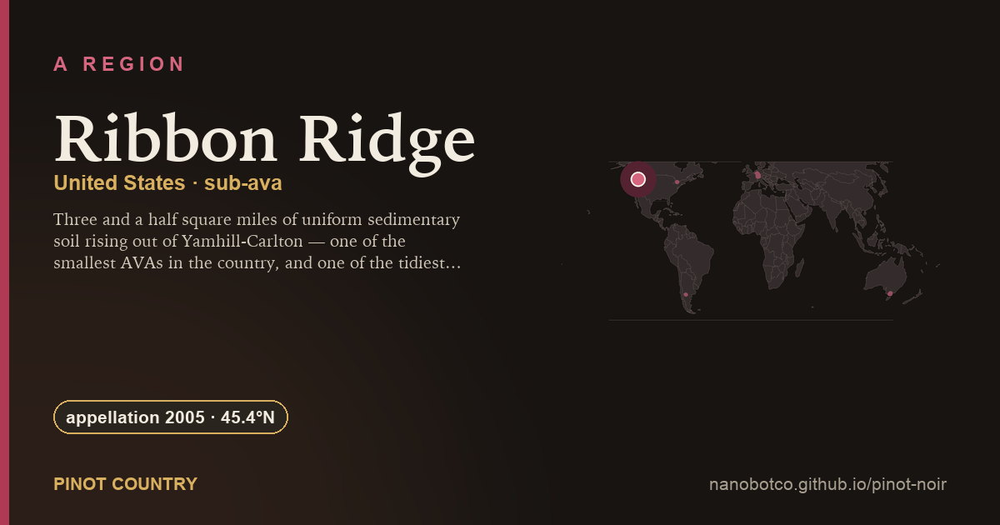
Ribbon RidgeThree and a half square miles of uniform sedimentary soil rising out of Yamhill-Carlton — one of the smallest AVAs in the country, and one of the tidiest arguments for drawing a line around a single landform.
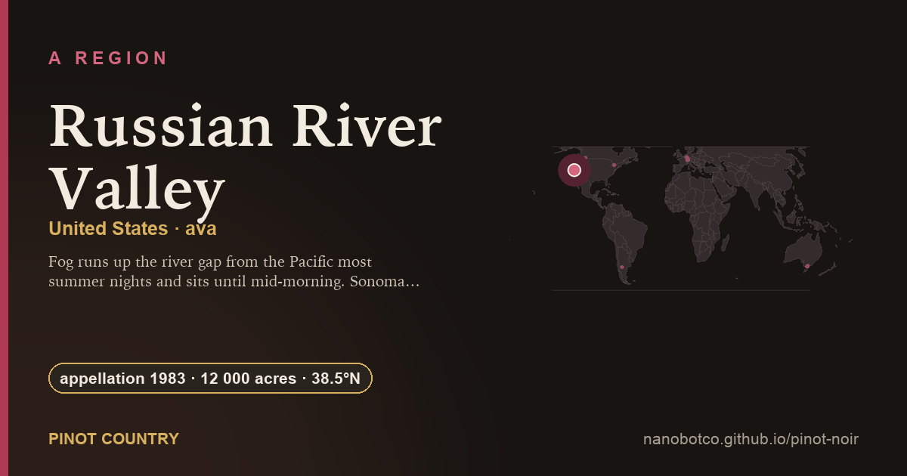
Russian River ValleyFog runs up the river gap from the Pacific most summer nights and sits until mid-morning. Sonoma planted pinot noir into that fog and the plantings tripled in a decade.
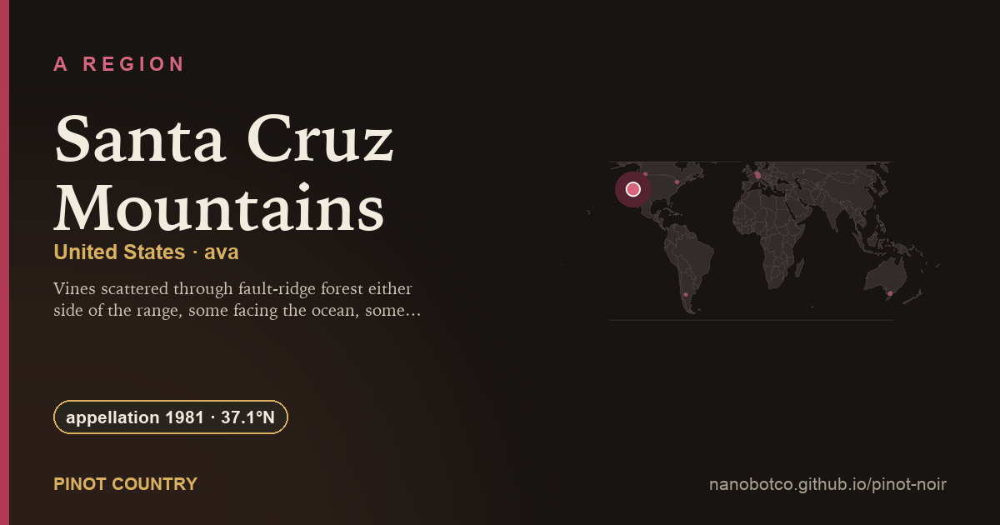
Santa Cruz MountainsVines scattered through fault-ridge forest either side of the range, some facing the ocean, some facing the bay, none of them flat. Martin Ray planted pinot noir here when almost nobody in California would.
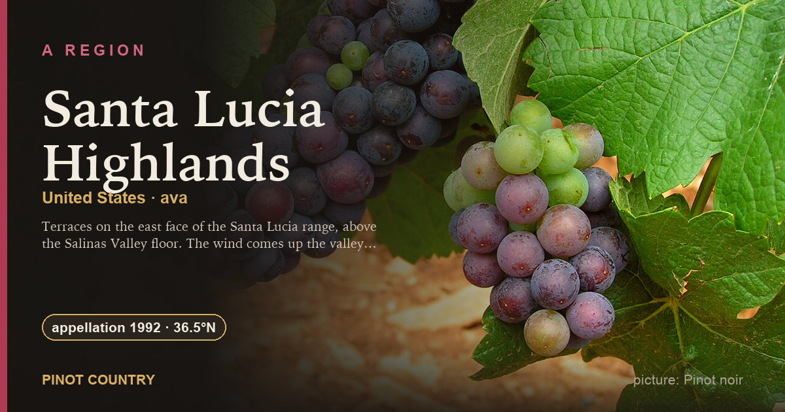
Santa Lucia HighlandsTerraces on the east face of the Santa Lucia range, above the Salinas Valley floor. The wind comes up the valley every afternoon hard enough to shape the canopy.
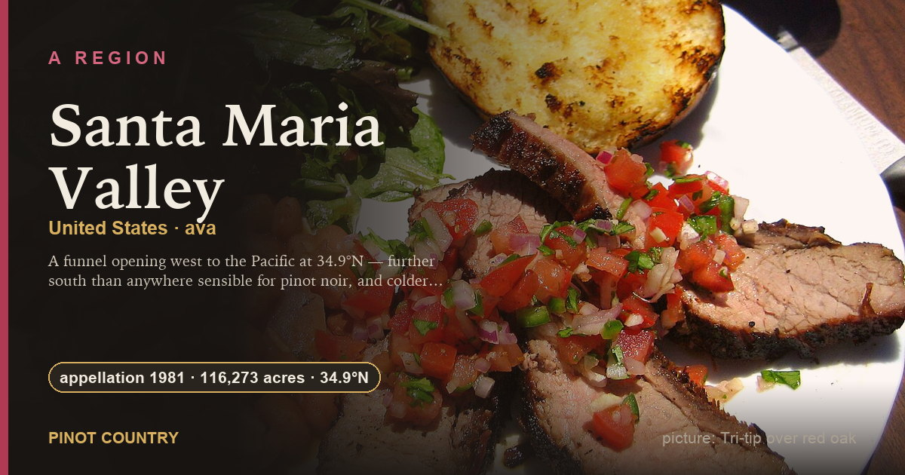
Santa Maria ValleyA funnel opening west to the Pacific at 34.9°N — further south than anywhere sensible for pinot noir, and colder through the growing season than most of Oregon.
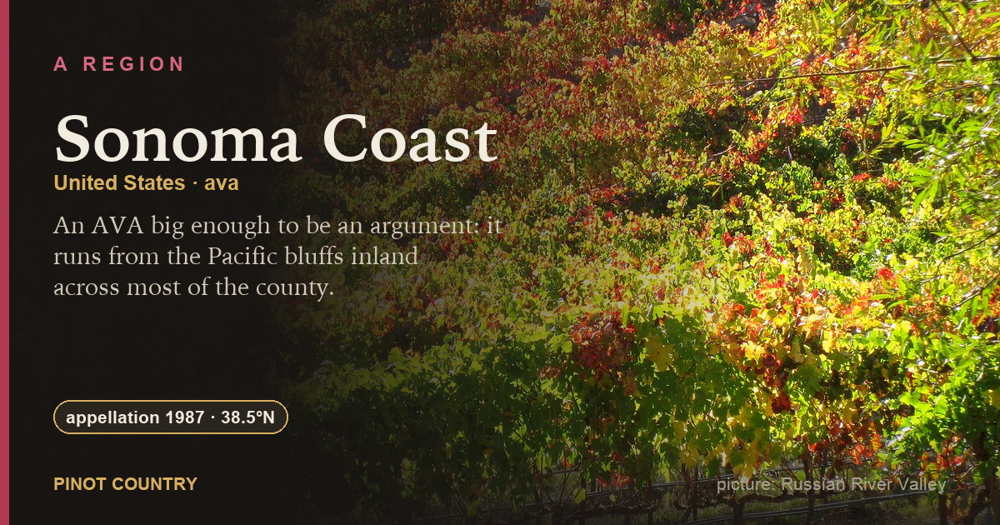
Sonoma CoastAn AVA big enough to be an argument: it runs from the Pacific bluffs inland across most of the county.
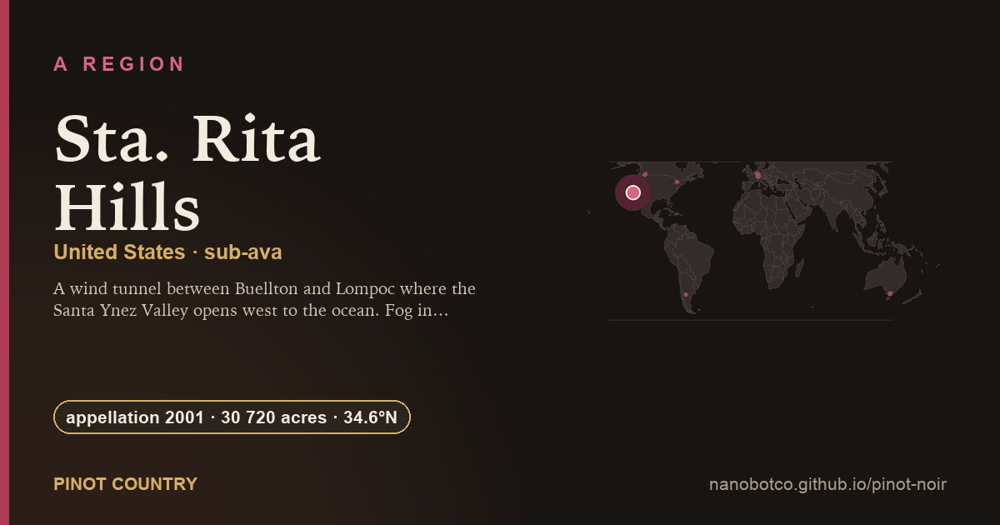
Sta. Rita HillsSanta Rita Hills
A wind tunnel between Buellton and Lompoc where the Santa Ynez Valley opens west to the ocean. Fog in the morning, thirty-knot afternoons, and some of the slowest ripening in California.
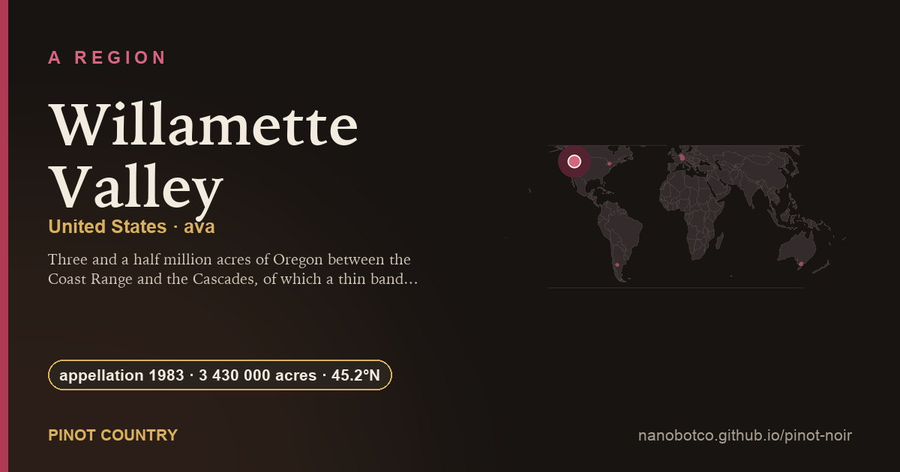
Willamette ValleyThree and a half million acres of Oregon between the Coast Range and the Cascades, of which a thin band of hillside grows pinot noir. Eleven AVAs now sit inside it.
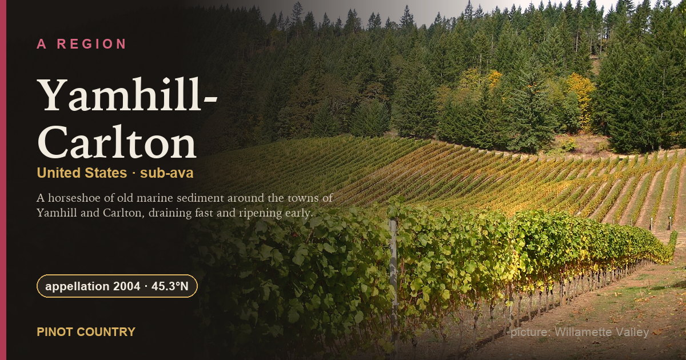
Yamhill-CarltonA horseshoe of old marine sediment around the towns of Yamhill and Carlton, draining fast and ripening early.